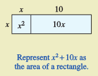
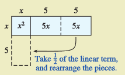
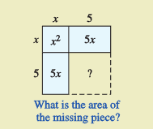
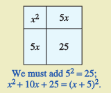

Section 3.4 Completing the Square
Activity 3.4.1. Squares of Binomials.
(a)
Write a formula for the square of a binomial:
Notice that the constant term of the trinomial is , and the coefficient of the linear term (or \(x\)-term) is .
(b)
Now we'll reverse the process. Add a constant to the expression that will turn it into a perfect square:
(Do you see how to find the constant? Here's what you do:)
First find \(p:~~~~~~~~~~~~~2p=-16\text{,}\) so \(p=\frac{1}{2}(-16)=\)
Then find \(p^2:~~~~~~~~~~~~p^2=\)
We can turn any quadratic expression into a perfect square by adding the correct constant. This process is called completing the square.
(c)
Complete the square and write the result as the square of a binomial.
\(\displaystyle x^2 + 18x + \fillinmath{XXX} = \)
\(\displaystyle x^2 - 14x + \fillinmath{XXX} = \)
(d)
For parts these problems, do not use a calculator! Work with fractions.
\(\displaystyle x^2 + 3x + \fillinmath{XXX} = \)
\(\displaystyle x^2 - \dfrac{5}{2}x + \fillinmath{XXX} = \)
Activity 3.4.2. A Geometric Viewpoint.
We can visualize completing the square using rectangles.
(a)
Study the diagrams that illustrate completing the square for \(x^2+10x\text{.}\)
Step 1 
Step 2 
Step 3 
Step 4 
(b)
Draw a similar set of diagrams to illustrate completing the square for \(x^2+16x\text{.}\)
Activity 3.4.3. Solving Quadratic Equations by Completing the Square.
We use the technique of completing the square to solve quadratic equations. There are two parts to this method:
Create a perfect square
Use extraction of roots
(a)
Follow the steps to solve \(~~x^2-6x-16=0\)
Move the constant term to the other side of the equation:
Complete the square on the left side:
Add 9 to both sides of the equation:
Write the left side as the square of a binomial:
Use extraction of roots to find the solutions: take the square root of both sides.
The solutions are and .
(b)
Graph the parabola \(y=x^2-6x-16\) with technology, and copy the graph onto the grid. What are the \(x\)-intercepts of the graph?
(c)
Solve \(~~x^2-8x-4=0~~\) by completing the square. (This equation cannot be solved by factoring!)
Move the constant term to the right side:
Complete the square on the left side:
Add \(p^2\) to both sides:
Write the left side as the square of a binomial, and simplify the right side:
Extract roots to obtain two solutions:
Use a calculator to find decimal approximations for each solution. Round to thousandths:
Activity 3.4.4. The Lead Coefficient.
Our method for completing the square only works if the coefficient of \(x^2\) is 1. If the lead coefficient is not 1, we must divide each term of the equation by the lead coefficient.
(a)
Solve \(~~4x^2-12x-1=0~~\) by completing the square.
Divide each term by 4:
Move the constant term to the right side:
Complete the square on the left side:
Add \(p^2\) to both sides:
Write the left side as the square of a binomial, and simplify the right side:
Extract roots to obtain two solutions:
Use a calculator to find decimal approximations for each solution. Round to thousandths:
(b)
Graph the parabola \(y=4x^2-12x-1\) in the standard window, and copy the graph onto the grid. What are the \(x\)-intercepts of the graph?

Subsection 3.4.1 Check Your Understanding
Name three algebraic methods for solving a quadratic equation.
Give an example of a quadratic trinomial that is the square of a binomial.
In Activity 3, what were the two parts named for solving an equation by completing the square?
-
What is wrong with the following solution?
\begin{align*} 2x^2-8x+3 \amp = 0\\ 2x^2-8x+16 \amp = -3 + 16\\ (2x-4)^2 \amp = 13\\ x \amp = \dfrac{4 \pm \sqrt{13}}{2} \end{align*}
Subsection 3.4.2 Wrap Up
In this Lesson, we worked on the following skills and goals related to quadratic models:
Add a constant to \(x^2+bx\) to create a perfect square
Solve quadratic equations by completing the square